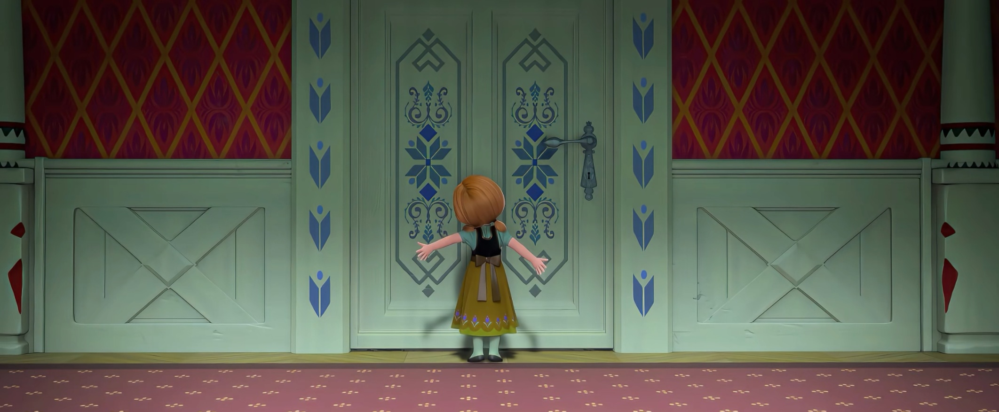
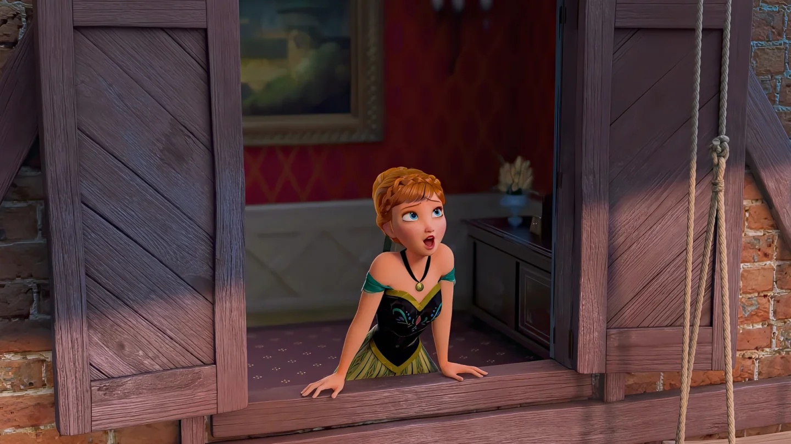
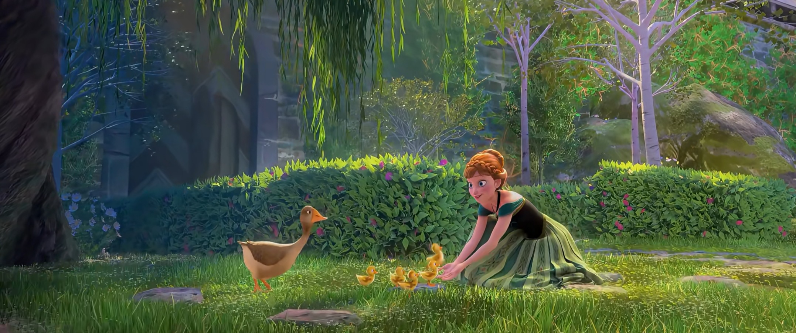

童年与隔离


📖 这一页讲什么
安娜的童年，是「亲密」与「隔离」的拉锯。一段被掩埋的魔法意外，让姐姐艾莎开始疏远自己，而安娜因为记忆被抹去，始终不明白「姐姐为什么不理我」。这一页梳理：魔法意外如何发生、安娜如何在不知情的情况下承受隔离、以及这段童年如何塑造了她的性格。
💞 童年的亲密：魔法是姐妹的游戏

在最早的记忆里，安娜与艾莎是最亲密的玩伴。设定集与《Conceal, Don't Feel》都描写过姐妹在城堡大厅里用冰雪制造「下雪」的欢乐场景——五岁的安娜把面粉抛向空中喊「像下雪一样」，而艾莎的本能是用真正的雪回应。那时的魔法，是联结，不是诅咒。安娜享受着作为「妹妹」、能被姐姐逗笑的角色，她不知道姐姐的魔法有多么危险，只知道「姐姐能变出雪，真好玩」。这段亲密的时光，是安娜后来「不放弃姐姐」的情感基础——她记得姐姐曾经爱她，所以她相信姐姐仍然爱她。
⚠️ 转折：那次没有说清的意外
姐妹玩雪时，艾莎的魔法失控制造出危险的冰，击中了安娜的头部。父母及时请来地精救治，安娜活了下来，却失去了关于魔法的记忆。地精首领告诫：记忆可以抹去，但「恐惧」会留下。从此，父母要求艾莎「藏起力量，别去感受」——这句善意的叮嘱，成了姐妹隔离的起点。对安娜来说，这次意外的后果是「双重的」：她失去了关于魔法的记忆，也失去了姐姐的陪伴。她不知道姐姐为什么突然疏远自己，只知道「姐姐不再跟我玩了」。这种「不明所以的被抛弃」，是安娜童年最深的创伤。


🚪 隔离：一扇关上的门


为了不再伤害别人，艾莎开始主动疏远。她戴上手套、关上房门、拒绝安娜的靠近。《Do You Want to Build a Snowman》用一个不断被关上的门，浓缩了安娜童年的孤独：一次次，安娜敲门，艾莎退后。门后的沉默与门外的等待，正是姐妹分离的视觉母题：物理距离不远，情感却隔着重霜。安娜不知道门后发生了什么，她只知道「姐姐不想见我」。她尝试过各种方式引起姐姐的注意——唱歌、画画、在门外说话——但都没有回应。这种「被忽视」的经历，塑造了安娜「极度渴望陪伴」的性格，也让她在加冕日遇到汉斯时，轻易地相信了「一见钟情」——因为她太渴望被爱了。
🤍 白发印记：被抹去的记忆留下的痕迹
地精抹去了安娜关于魔法的记忆，却留下了一缕永久性的铂金色发丝。这缕白发是「被抹去的记忆」的物理痕迹——安娜不记得发生了什么，但她的身体记得。这缕白发在F1中多次出现：加冕日的编发中、北山旅途中、被冰封时全身变白。直到F1结尾「冰冻之心」破除后，这缕白发才消失，恢复原发色。白发的消失象征着「创伤的愈合」——安娜终于知道了姐姐的秘密，姐妹和解，那段「不明所以的被抛弃」的创伤终于被理解、被治愈。
🌧️ 父母海难：更深的孤独
父母出海遇难，安娜的「锚」也断了。与艾莎不同，安娜对父母的记忆更多是「缺席」——父母大部分时间都在照顾艾莎、处理魔法的问题，安娜常常被忽视。父母去世后，安娜成为王国里最孤独的公主：姐姐不理她，父母不在了，城堡里只有她和仆人。三年守丧期里，她独自度过了无数个孤独的日子。但正是这段孤独，让她的乐观变得更加坚韧——她不是「不知道孤独是什么滋味」，而是「知道孤独是什么滋味，仍然选择相信美好」。
🔍 这一段的重量
理解童年的安娜，是理解整个角色的钥匙：她的「乐观」不是天性，而是在十几年的孤独中磨练出来的韧性；她的「冲动」不是鲁莽，而是「太渴望连接，所以先行动再说」；她的「忠诚」不是愚忠，而是「记得姐姐曾经爱我，所以相信她仍然爱我」。安娜的所有性格特质，都可以在童年的「亲密—意外—隔离—孤独」中找到根源。当电影里成年安娜唱出「For the first time in forever」时，那不是一句简单的歌词，而是一个女孩用十几年的孤独换来的「终于可以与人相连」的喜悦。